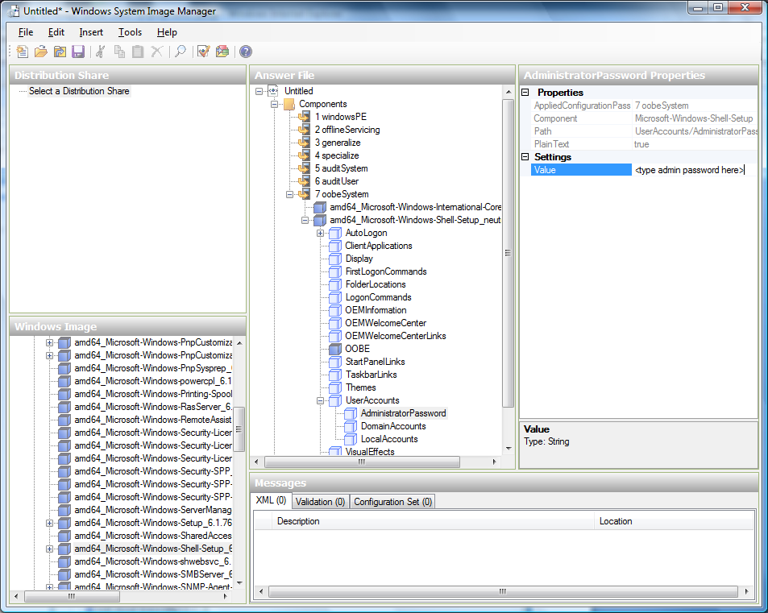

Creating a Windows Template#
Windows Templates must be prepared with Sysprep before they can be provisioned on multiple machines. Sysprep allows you to create a generic Windows Template and avoid any possible SID conflicts.
An overview of the procedure is as follows:
Upload your Windows ISO.
For more information, see “Adding an ISO”.
Create an instance with this ISO.
For more information, see “Creating instances”.
Add Virtual TPM device to the instance.
For more information, see “Instance Settings for Virtual Trusted Platform Module (vTPM) ”.
Follow the steps in Sysprep for Windows Server 2008 R2 (below) or Sysprep for Windows Server 2003 R2, depending on your version of Windows Server
The preparation steps are complete. Now you can actually create the Template as described in Creating the Windows Template.
System Preparation for Windows Server 2008 R2#
For Windows 2008 R2, you run Windows System Image Manager to create a custom sysprep response XML file. Windows System Image Manager is installed as part of the Windows Automated Installation Kit (AIK). Windows AIK can be downloaded from Microsoft Download Center.
Use the following steps to run sysprep for Windows 2008 R2:
Note
The steps outlined here are derived from the excellent guide by Charity Shelbourne, originally published at Windows Server 2008 Sysprep Mini-Setup.
Download and install the Windows AIK
Note
Windows AIK should not be installed on the Windows 2008 R2 instance you just created. Windows AIK should not be part of the Template you create. It is only used to create the sysprep answer file.
Copy the install.wim file in the \sources directory of the Windows 2008 R2 installation DVD to the hard disk. This is a very large file and may take a long time to copy. Windows AIK requires the WIM file to be writable.
Start the Windows System Image Manager, which is part of the Windows AIK.
In the Windows Image pane, right click the Select a Windows image or catalog file option to load the install.wim file you just copied.
Select the Windows 2008 R2 Edition.
You may be prompted with a warning that the catalog file cannot be opened. Click Yes to create a new catalog file.
In the Answer File pane, right click to create a new answer file.
Generate the answer file from the Windows System Image Manager using the following steps:
The first page you need to automate is the Language and Country or Region Selection page. To automate this, expand Components in your Windows Image pane, right-click and add the Microsoft-Windows-International-Core setting to Pass 7 oobeSystem. In your Answer File pane, configure the InputLocale, SystemLocale, UILanguage, and UserLocale with the appropriate settings for your language and country or region. Should you have a question about any of these settings, you can right-click on the specific setting and select Help. This will open the appropriate CHM help file with more information, including examples on the setting you are attempting to configure.

You need to automate the Software License Terms Selection page, otherwise known as the End-User License Agreement (EULA). To do this, expand the Microsoft-Windows-Shell-Setup component. High-light the OOBE setting, and add the setting to the Pass 7 oobeSystem. In Settings, set HideEULAPage true.

Make sure the license key is properly set. If you use MAK key, you can just enter the MAK key on the Windows 2008 R2 instance. You need not input the MAK into the Windows System Image Manager. If you use KMS host for activation you need not enter the Product Key. Details of Windows Volume Activation can be found at http://technet.microsoft.com/en-us/library/bb892849.aspx
You need to automate is the Change Administrator Password page. Expand the Microsoft-Windows-Shell-Setup component (if it is not still expanded), expand UserAccounts, right-click on AdministratorPassword, and add the setting to the Pass 7 oobeSystem configuration pass of your answer file. Under Settings, specify a password next to Value.

You may read the AIK documentation and set many more options that suit your deployment. The steps above are the minimum needed to make Windows unattended setup work.
Save the answer file as unattend.xml. You can ignore the warning messages that appear in the validation window.
Copy the unattend.xml file into the c:\windows\system32\sysprep directory of the Windows 2008 R2 Instance
Once you place the unattend.xml file in c:\windows\system32\sysprep directory, you run the sysprep tool as follows:
cd c:\Windows\System32\sysprep sysprep.exe /oobe /generalize /shutdownThe Windows 2008 R2 instance will automatically shut down after sysprep is complete.
System Preparation for Windows Server 2003 R2#
Earlier versions of Windows have a different sysprep tool. Follow these steps for Windows Server 2003 R2.
Extract the content of \support\tools\deploy.cab on the Windows installation CD into a directory called c:\sysprep on the Windows 2003 R2 instance.
Run c:\sysprep\setupmgr.exe to create the sysprep.inf file.
Select Create New to create a new Answer File.
Enter “Sysprep setup” for the Type of Setup.
Select the appropriate OS version and edition.
On the License Agreement screen, select “Yes fully automate the installation”.
Provide your name and organization.
Leave display settings at default.
Set the appropriate time zone.
Provide your product key.
Select an appropriate license mode for your deployment
Select “Automatically generate computer name”.
Type a default administrator password. If you enable the password reset feature, the users will not actually use this password. This password will be reset by the instance manager after the guest boots up.
Leave Network Components at “Typical Settings”.
Select the “WORKGROUP” option.
Leave Telephony options at default.
Select appropriate Regional Settings.
Select appropriate language settings.
Do not install printers.
Do not specify “Run Once commands”.
You need not specify an identification string.
Save the Answer File as c:\sysprep\sysprep.inf.
Run the following command to sysprep the image:
c:\sysprep\sysprep.exe -reseal -mini -activatedAfter this step the machine will automatically shut down